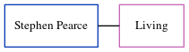

Stephen J Pearce
[ Home ] | [ Calendar ] | [ Surnames Index ] | [ Census Index ] | [ Family History ]Stephen Pearce, the husband of Diana I Knowler (the third cousin on the mother's side of Nigel Horne), and married Diana in Thanet, Kent, England around Feb 19871.
Citations
- England & Wales Marriages 1837-2005 - Findmypast
Media
England & Wales marriages 1837-2005 - BMD/M/1987/3/84454095
Family Tree
Generated by ged2site. Last updated on Jun 11, 2024